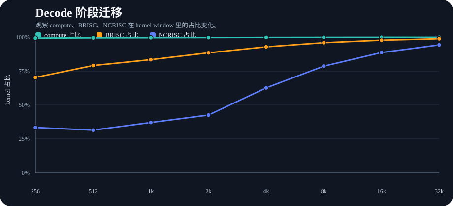
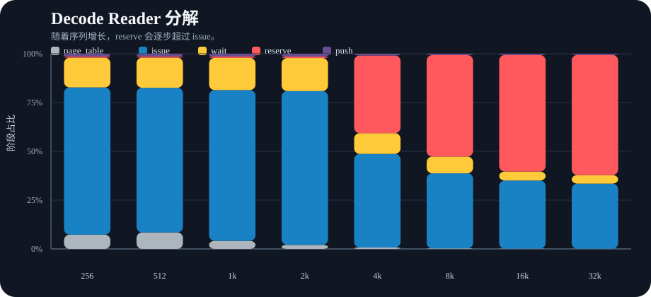
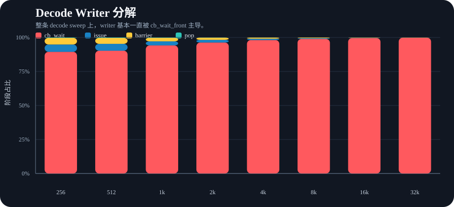
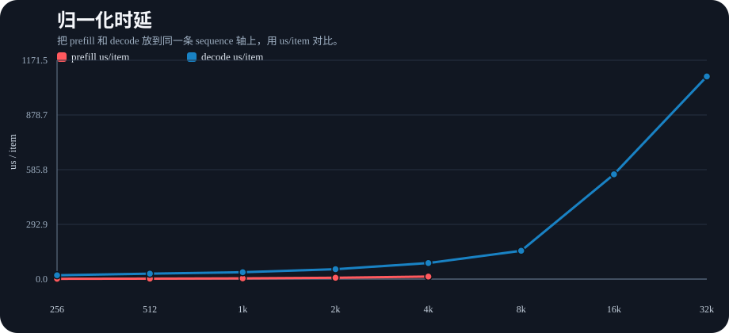
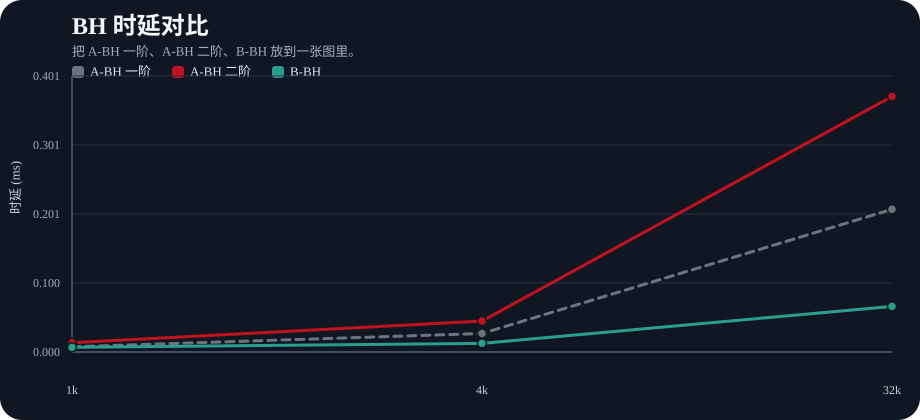
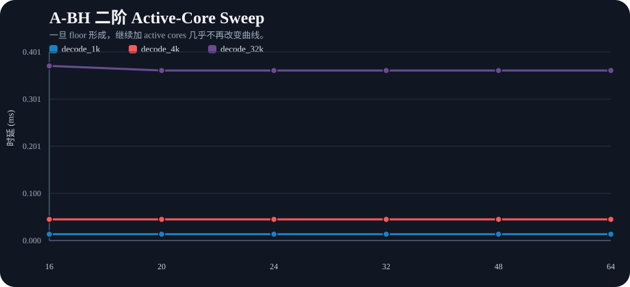

这份 dashboard 把当前 WH detailed profile 和 BH 模型放到一页里，重点突出 decode 阶段迁移、reader/writer 内部分解，以及 A-BH 一阶/二阶/B 的差异。






说明：当前 dashboard 使用现有 detailed JSON 和 simple BH simulation JSON。新接入的 source-level marker 要在下次重跑 detailed sweep 后才会真正出现在结果里。